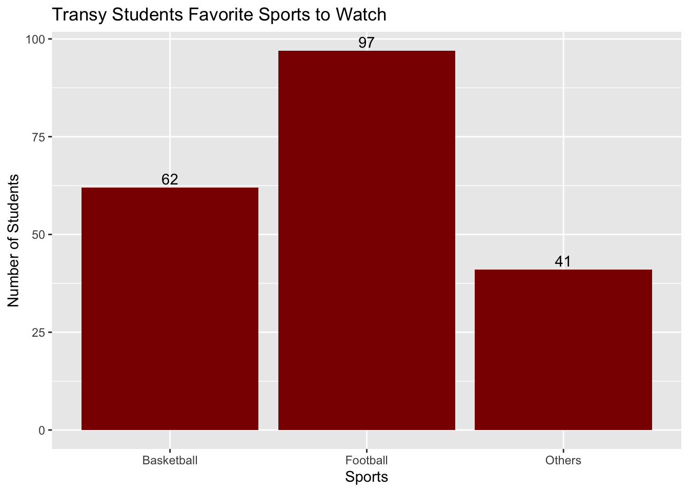
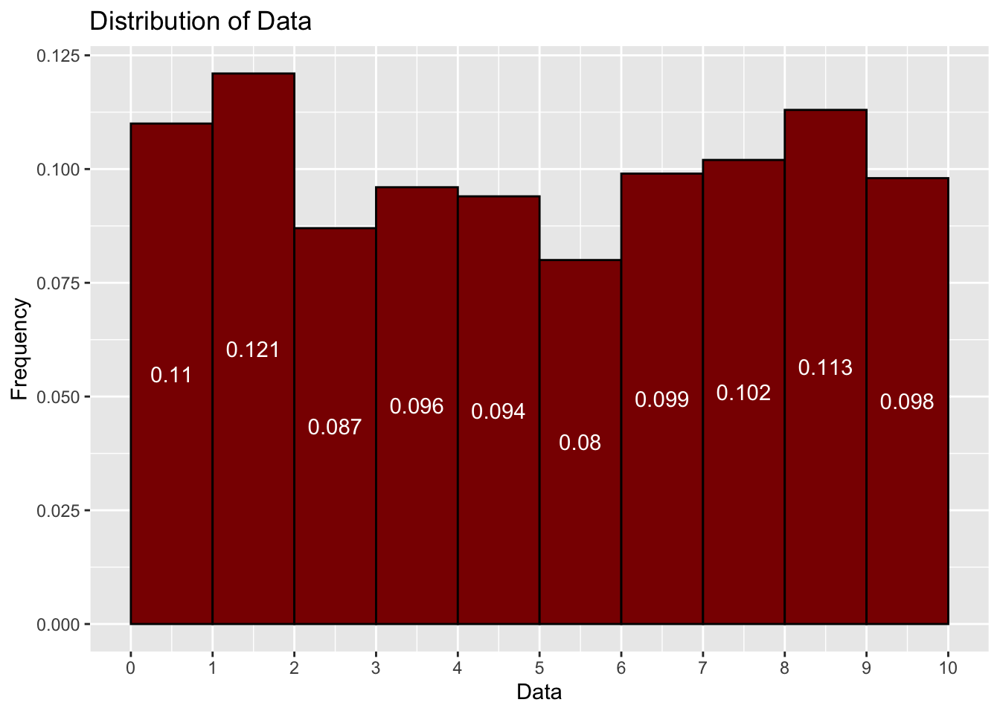

Qualitative variables are variables that are not numerical. They are categorical variables that can be divided into groups, which is why they are often referred to as categorical variables. You have probably encountered these when you have filled out an application for employment. You may have had to check boxes regarding ethnicity, level of education or gender. These are all examples of qualitative variables. We can also break them down into two different types of qualitative variables, nominal and ordinal variables.
Nominal variables are variables that have no order. For example,
Hair or Eye Color
Religious Affiliation
Gender
Marital Status
Political Affiliation
Even though these are not numerical variables, we could still create some numerical structures based off of nominal variables that will help us understand the data. For example, assume we took a survey of 200 Transylvania University students about their favorite sport to watch and that 97 said Football, 62 said Basketball, and 41 said Others. Based on this data, we could create a bar graph to show the distribution of favorite sports to watch. (Don’t worry about knowing these commands yet. We will get to these commands later in the course.)
We need to first create the data frame for the variable :
# Create a dataframe. We will first create a vector that has the names# of the sports and another vector that has the number of students that# like each sport.sports <-c("Football", "Basketball", "Others")students <-c(97, 62, 41)# We will then put them together into a data frame.df <-data.frame(sports, students)# And print out the data frame to make sure it looks correct.df
sports students
1 Football 97
2 Basketball 62
3 Others 41
Even though this data is nominal, we could also create a bar graph to show the distribution of favorite sports to watch.
# Create a bar graph using ggplot# We need to load the ggplot library.library(ggplot2)# We can now create the bar graph.ggplot(df, aes(x = sports, y = students)) +geom_bar(stat ="identity", fill ="darkred") +geom_text(aes(label = students), vjust =-0.3, color ="black") +labs(title ="Transy Students Favorite Sports to Watch", x ="Sports", y ="Number of Students")

Ordinal variables are qualitative variables that have an order. For example, the variable “education” is an ordinal variable because there is an order to the levels of education. They could include the following:
Ordinal variables are often treated as categorical variables, but if it makes sense, then they can also be treated as numerical variables. What we would need to do is to assign each of the variables a numerical value that corresponds to the level of the variable.
We could perform the same commands we did above, but by adding numerical values to the variables, we might be able to do other meaningful analysis. For instance, if we were to assign a numerical value to the levels of education (high school = 1, bachelor’s = 2, master’s = 3), we could do something such as calculating the mean level of education for a group of people.
Notice that we could always add numerical values to qualitative variables, but it doesn’t always make sense to do so. Consider the hair color example. We could assign value to different outcomes (black = 1, brown = 2, blonde = 3, etc.) but what would we then do with this data? It doesn’t make sense to calculate the mean hair color of a group of people, especially if the way you label the numbers to variables is different from how I would label them. What would the averages describe? This is why we will call a qualitative variable a nominal variable if it doesn’t make sense to assign numerical values to the variable, and we will call it an ordinal variable if it does make sense to assign numerical values to the variable.
Quantitative Variables
Quantitative variables are numerical variables. Just like the qualitative variables above, we can be divide quantitative variables into two different categories, discrete and continuous variables.
Discrete variables are variables that can only take on certain values, are countable, and are indivisible. For example, the number of students in a class is a discrete variable because it can only take on certain values (1, 2, 3, 4, etc.). Clearly you can’t have a class with 12.5 students. The number of siblings a person has is also a discrete variable because it can only take on certain values (0, 1, 2, 3, etc.). The number of cars a person owns is a discrete variable because it can only take on certain values (0, 1, 2, 3, etc.). Similarly, you couldn’t have 2.3 siblings or 4.8 cars.
When it comes to the analysis of discrete data, the tools we will use are similar to the ones we used for qualitative data. We will use bar graphs, tables, pie charts, and other visualizations to help us understand the data.
Continuous variables are variables that can take on any value in a certain range. A continuous variable takes on an infinite number of possible values within a given range. For example, the height of a person is a continuous variable because it can take on any value (5.2, 5.317, 5.4611, etc.). The weight of a person is a continuous variable because it can take on any value (120, 121.3, 122, etc.). The amount of time it takes to complete a task is a continuous variable because it can take on any value (5.2, 5.3, 5.4, etc.).
Because the possible values for a continuous variable are infinite, we measure continuous variables (rather than count), often using a measuring device like a ruler or stopwatch. Continuous variables include all the fractional or decimal values within a range.
Sometimes we treat continuous variables as if they were discrete. Age is an excellent example of this. If you know a person’s time of birth, you could measure their age precisely up to the second or even millisecond if you wanted to. In this sense, age is a continuous variable. However, we don’t usually care about a person’s exact age. Instead, we treat age as a discrete variable and count age in years.
Analyzing continuous variables in R primarily involves calculating descriptive statistics like mean, median, standard deviation, and visualizing the data distribution using plots like histograms, density plots, and boxplots, allowing you to understand the central tendency, spread, and potential skewness of the data; you can also explore relationships between continuous variables using scatterplots and calculate correlation coefficients to assess their linear association
Let’s create a data set of continuous variables and analyze it. We will pick 1000 values from 0 to 10.
# We shall "set the seed" for randomization. This allows us to get the same# values everytime we run these commands. Without this, the results would be# different each time.set.seed(1123)# Generate 1000 random values between 0 and 10 and store them in the # variable 'data_example'df <-runif(1000, min =0, max =10) # Here are the first six values in the data set, using the head( ) command :head(df)
We could now carry out some analysis such as calculating the mean, median, and standard deviation of the data set. We could also create a histogram to show the distribution of the data. These are the types of analysis we will be doing using continuous variables.
# Calculate the mean of the data setmean(df)
[1] 4.932104
# Calculate the median of the data setmedian(df)
[1] 4.919963
# create a histogram with 10 bars (bins) for the data setggplot(data =data.frame(df), aes(x = df, y =after_stat(density))) +geom_histogram(bins =10, binwidth =1, center=0.5, fill ="darkred", color ="black") +scale_x_continuous(breaks =seq(0, 10, by =1), limits =c(0,10))+stat_bin(geom ="text", aes(label =round(after_stat(density),3), y=0.5*after_stat(density)), breaks=seq(0, 10, by=1), colour="white", vjust=0.5) +labs(title ="Distribution of Data", x ="Data", y ="Frequency")

For continuous variables, it doesn’t make since to have a histogram for each individual values like we did for discrete variables. If we tried this then we might need an infinte amount of bars or more! Instead, we group the data into intervals (bins) of the same length and then create a histogram based on these intervals. This is what we did above. We grouped the data into intervals of 1 and then created a histogram based on the intervals (0,1), (1, 2), (2, 3), etc. For this histogram the bars represent the proportions (rounded to 3 decimal places) of the data that fall into each interval. If you look at the second bar in the histogram, you will see the number 0.121 in the bar. This means that 12.1% of the data falls into the interval (1, 2).
Exercises
In this assignment, you will distinguish between different types of variables: qualitative (nominal and ordinal) and quantitative (discrete and continuous). Each question will present a variable, and you will identify its type.
Problem 1
Gender identity of individuals in a survey.
Type:
Explanation:
Problem 2
Annual income of households in a city.
Type:
Explanation:
Problem 3
Number of books read by students in a year.
Type:
Explanation:
Problem 4
Educational attainment levels (e.g., high school diploma, bachelor’s degree, master’s degree, etc.).
Type:
Explanation:
Problem 5
Number of reported hate crimes in different states.
Type:
Explanation:
Problem 6
Types of housing (e.g., owned, rented, homeless).
Type:
Explanation:
Problem 7
Age of participants in a community health study.
Type:
Explanation:
Problem 8
Political party affiliation (e.g., Democrat, Republican, Independent).
Type:
Explanation:
Problem 9
Number of languages spoken by immigrants in a region.
Type:
Explanation:
Problem 10
Frequency of attending religious services (e.g., never, occasionally, regularly).
Type:
Explanation:
Problem 11
Number of protests attended in a year.
Type:
Explanation:
Problem 12
Types of discrimination experienced (e.g., racial, gender, disability).
Type:
Explanation:
Problem 13
Height of students in a classroom.
Type:
Explanation:
Problem 14
Marital status (e.g., single, married, divorced, widowed).
Type:
Explanation:
Problem 15
Number of social media accounts owned by individuals.
Type:
Explanation:
Problem 16
Severity of food insecurity (e.g., none, mild, moderate, severe).
Type:
Explanation:
Problem 17
Number of children in a family.
Type:
Explanation:
Problem 18
Types of employment (e.g., full-time, part-time, unemployed).
Type:
Explanation:
Problem 19
Monthly electricity usage in kilowatt-hours.
Type:
Explanation:
Problem 20
Frequency of using public transportation (e.g., never, sometimes, always).